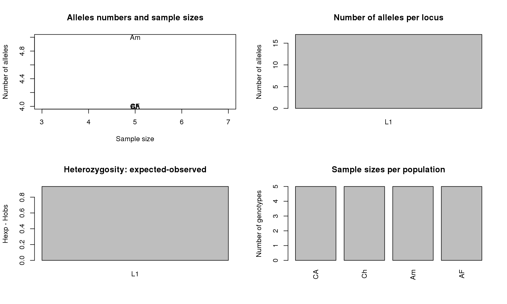

In this vignette, you will see general information on how to calculate basic population genetic statistics from sequence data using R packages. These basic statistics serve as exploratory analyses that will tell you 1) the levels of genetic diversity in your overall population and subpopulations, 2) general patterns of the distribution of genetic diversity across subpopulations, and 3) possible violations of the data to the Wright-Fischer Model (Ref).
The first section of this tutorial provides information on how to analyze sequence data from one locus (link to section 1). The second section will discuss how to analyze multilocus sequence data (link to section 2).
library(adegenet) # to store the data
library(ape)
library(pegas)
library(hierfstat)
library(mmod)
library(genetics)To import our raw sequence data into R, the most widely used formats are FASTA and nexus. Before you import your data into R, please make sure the sequences are aligned. Sequence alignments can be done in software such as Clustal or Muscle. Both are are part of the software SeaView. Alignments can be saved in FASTA format. Another R option could be library(Biostrings) but it is not discussed here. In all cases, we will convert the sequence data file into genind objects, which is the standard file format for population genetic analyses in R.
Dataset “Ebom_mt.fas” can be downloaded here.
Dataset “Ebom_CAD.fas” can be downloaded here.
Import the previously aligned sequence data into R. The ‘Ebom_mt.fas’ file contains alignments of two concatenated mitochondrial genes.
myData1 <- read.FASTA("Ebom_mt.fas") # this creates a DNAbin object
class(myData1)## [1] "DNAbin"To convert DNAbin objects to genind objects:
#library(mmod)
tmp1<-as.matrix(myData1) # converts the list of sequences into a matrix
myData1b<-as.genind.DNAbin(tmp1, rep(c("CA","Ch","Am","AF"), each=5))Calculate nucleotide diversity and summary descriptors for the data:
myData1_pi<-nuc.div(myData1) # nucleotide diversity from a sample of DNA sequences in DNAbin format
myData1_pi## [1] 0.009457949myData1_summ<-summary(myData1b) # to visualize summary descriptors of your sequence data file##
## # Total number of genotypes: 20
##
## # Population sample sizes:
## CA Ch Am AF
## 5 5 5 5
##
## # Number of alleles per locus:
## L1
## 17
##
## # Number of alleles per population:
## 1 2 3 4
## 4 4 5 4
##
## # Percentage of missing data:
## [1] 0
##
## # Observed heterozygosity:
## L1
## 0
##
## # Expected heterozygosity:
## L1
## 0.935Make some plots:
par(mfrow = c(2, 2))
plot(myData1_summ$pop.eff, myData1_summ$pop.nall, xlab = "Sample size",
ylab = "Number of alleles", main="Alleles numbers and sample sizes",
type = "n")
text(myData1_summ$pop.eff, myData1_summ$pop.nall, lab = names(myData1_summ$pop.eff))
barplot(myData1_summ$loc.nall, ylab="Number of alleles",
main = "Number of alleles per locus")
barplot(myData1_summ$Hexp-myData1_summ$Hobs, ylab = "Hexp - Hobs",
main = "Heterozygosity: expected-observed")
barplot(myData1_summ$pop.eff, main = "Sample sizes per population",
ylab = "Number of genotypes", las = 3)
Note that no observed heterozygosity is expected because sequences come from mitochondrial data.
#library(genetics)
myData1_HWE<- HWE.test.genind(myData1b) # this will test for Hardy-Weinberg equilibrium
myData1_HWE # p-values lower than 0.05 indicate deviations from HWE## $L1
## $L1$P1
##
## Pearson's Chi-squared test
##
## data: tab
## X-squared = 15, df = 6, p-value = 0.02026
##
##
## $L1$P2
##
## Pearson's Chi-squared test
##
## data: tab
## X-squared = 15, df = 6, p-value = 0.02026
##
##
## $L1$P3
##
## Pearson's Chi-squared test
##
## data: tab
## X-squared = 20, df = 10, p-value = 0.02925
##
##
## $L1$P4
##
## Pearson's Chi-squared test
##
## data: tab
## X-squared = 15, df = 6, p-value = 0.02026Note: If you have loci in your dataset that deviate from HWE, your dataset may violate assumptions for downstream population genetic analyses.
myData1_loci<- as.loci(myData1b)
Fst(myData1_loci) # this function calculates overall Fit, Fst, and Fis of the dataset## Fit Fst Fis
## L1 1 0.075 1myData1_bs<- chao_bootstrap(myData1b, nreps=100) # subsample your dataset multiple times to estimate significance of genetic differentiation statistics
summarise_bootstrap(myData1_bs, Gst_Nei) # estimate Gst_Nei and whether or not it is significant##
## Estimates for each locus
## Locus Mean 95% CI
## L1 0.2074 (0.1601-0.2856)
##
## Global Estimate based on average heterozygosity
## 0.2074 (0.1601-0.2856)summarise_bootstrap(myData1_bs, Gst_Hedrick) # estimate Hedrick's Gst and whether or not it is significant##
## Estimates for each locus
## Locus Mean 95% CI
## L1 1 (1-1)
##
## Global Estimate based on average heterozygosity
## 1 (1-1)summarise_bootstrap(myData1_bs, D_Jost) # estimate Jost's D and whether or not it is significant##
## Estimates for each locus
## Locus Mean 95% CI
## L1 1 (1-1)
##
## Global Estimate based on average heterozygosity
## 1 (1-1)
##
## Global Estimate based on harmonic mean of statistic
## 1 (1-1)myData1_GenDiff<-diff_stats(myData1b) # general test for genetic differentiation per locus and across all subpopultions using Gst, Gst' and Jost D (estimated and based on the harmonic mean between loci)
myData1_GenDiff## $per.locus
## Hs Ht Gst Gprime_st D
## L1 0.8222222 0.9555556 0.1395349 1 1
##
## $global
## Hs Ht Gst_est Gprime_st D_het D_mean
## 0.8222222 0.9555556 0.1395349 1.0000000 1.0000000 1.0000000#library(mmod)
myData1_Phist<- Phi_st_Meirmans(myData1b)
myData1_Phist # test fo population differentation for haploid data## $per.locus
## L1
## 1
##
## $global
## [1] 1To import raw sequence data from more loci into R:
myData2<- read.FASTA("Ebom_CAD.fas") # this creates a DNAbin object
class(myData2)
tmp2<-as.matrix(myData2) # converts the list of sequences into a matrix
allData<-cbind(tmp1, tmp2)To convert DNAbin objects to genind objects:
#library(mmod)
tmp3<-as.matrix(allData) # converts the list of sequences into a matrix
allDatab<-as.genind.DNAbin(tmp3, rep(c("CA","Ch","Am","AF"), each=5)) # bins data from multiple loci into one DNAbin object - MAKE SURE SEQUENCES IN THE FASTA FILE HAVE THE SAME NAMEFor example, testing for Genetic Differentiation:
#library(genetics)
allData_HWE<- HWE.test.genind(allDatab, res="matrix") # this will generate a matrix of p-values for HWE## Warning in chisq.test(tab, ...): Chi-squared approximation may be
## incorrect## Warning in chisq.test(tab, ...): Chi-squared approximation may be
## incorrect## Warning in chisq.test(tab, ...): Chi-squared approximation may be
## incorrect## Warning in chisq.test(tab, ...): Chi-squared approximation may be
## incorrectallData_HWE## L1
## P1 0.02925269
## P2 0.02925269
## P3 0.02925269
## P4 0.02925269For example, testing for overall Genetic Differentiation:
allData_loci<- as.loci(allDatab)
Fst(allData_loci) # this function calculates overall Fit, Fst, and Fis of the dataset## Fit Fst Fis
## L1 1 1.040834e-16 1In this vignette, we learned how to explore the patterns of genetic diversity in our dataset. Now, you know the level of genetic differentiation in your population and subpopulations, and whether or now they are genetically different. Also, you have an idea of potential violations of the dataset to the null Wright-Fischer model.
You may now want to move into looking into population differentiation in more detail (link to vignette). You may also want to explore demographic parameter estimation (e.g. deviations from neutrality, effective population size).